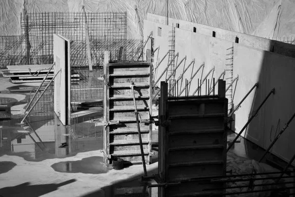

Final Drawings
Layout, foundation and utility details need to be settled before those areas are built.
Prachi Construction Projects builds textile units, gala sheds, loom foundations and processing-house civil work across Surat, Gujarat. With 10+ years of experience, we handle labour and materials under one contract; call +91 76004 90851 for a written estimate.
If you are looking for a textile construction company in Surat, the short answer is that we handle the civil work a running textile unit depends on. That includes gala buildings, airjet and waterjet loom sheds, factory structures, loom foundations, storage godowns and civil work for processing houses. We can take the full job with labour and materials, or provide labour and supervision only if you prefer to buy materials yourself.
A textile building is different from an ordinary warehouse. Machines arrive on fixed dates, utilities have to be ready before installation, and the floor has to suit the equipment rather than the other way round. We start with your plot, your layout and your machine supplier requirements, then work backward to a build sequence that makes sense. You can see the range of work on our projects page, read a focused gala unit guide, or use our cost guide to prepare your questions before you call.
This page is the main guide to our textile work. The sections below explain what the work involves, how we run a job, the technical points we raise at the start, the materials and checks we use, what can affect a schedule, who we build for and where we work. For a site specific discussion, please contact us.
From the first column to the final floor finish, each service is planned around production use.
A simple sequence that keeps drawings, materials and machine dates in step.
We ask what you will make, which machines you plan to install and how you want to use the building.
We look at access, ground conditions, boundaries and where trucks and materials can be staged.
We review the drawings with you and prepare a written estimate with scope and material assumptions.
Once scope is agreed, we plan the crew, materials and site setup around your machine arrival date.
Foundations, structure, flooring and drainage are executed stage by stage with regular site review.
We review levels, finishes and utility points with you before handing the building over for installation.

No two textile units behave the same way. These are the questions we raise early, in plain language, so that your building supports production instead of slowing it down.
[CONFIRM WITH OWNER: foundation drawing responsibility and load/vibration checks]
[CONFIRM WITH OWNER: scope of ETP and drainage work done]

Good industrial work is mostly about doing the simple things at the right time. We review the work before the next stage covers it up and tell you plainly if something needs attention.
[CONFIRM WITH OWNER: approved material brands and test reports]
[CONFIRM WITH OWNER: approved real photos and captions]
[CONFIRM WITH OWNER: PEB supply and erection scope]
We would rather give you a realistic programme than a quick guess.
Layout, foundation and utility details need to be settled before those areas are built.
Monsoon conditions and plot condition can affect excavation, concreting and site access.
If equipment is delivered before utilities are ready, installation and handover both get delayed.
Steel, cement and finishes need to be planned with the construction sequence, not ordered late.
Narrow approach roads or restricted working hours can slow down delivery and lifting.
Changing machine positions or drain points after work starts creates rework and extra time.
[CONFIRM WITH OWNER: typical timeline range for a textile unit of this size]
Whether you are starting a new unit or adding to an existing one, we shape the civil work around the way your business actually runs.
For a narrower look at building type, start with gala unit construction, industrial sheds and PEB or processing house work. For machine specific planning, see loom foundations. To understand what drives the budget, read textile construction cost factors.
See Our WorkTextile and industrial construction work across Surat and nearby industrial belts.
[CONFIRM WITH OWNER: confirmed service areas]
Common questions from textile owners planning construction in Surat.
Tell us about your plot, machines and timeline. We will give you a clear written estimate and a practical build plan.